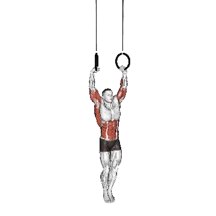

링 머슬업
링 머슬업은 전신 운동 중에서도 광배근, 대흉근, 상완삼두근을 중심으로 단련하는 운동입니다. 평균 반복 횟수와 기준 반복 횟수를 한 페이지에서 확인할 수 있습니다.

중급 평균 반복 횟수
평균적인 중급자의 기준입니다.
남성
8
여성
5
링 머슬업 평균 반복 횟수
| 레벨 | ||
|---|---|---|
| 입문 | < 1 | < 1 |
| 초급 | < 1 | < 1 |
| 중급 | 8 | 5 |
| 상급 | 20 | 11 |
| 엘리트 | 33 | 19 |
참고: 이 기준은 한 세트에서 수행할 수 있는 평균 반복 횟수의 추정치입니다. 체중, 가동 범위, 템포 같은 개인 요인에 따라 달라질 수 있습니다. 자세한 데이터는 아래 표에서 확인하세요.
링 머슬업 기준 반복 횟수
남성 체중별(lb) 데이터 [반복 횟수]
| 체중 | 입문 | 초급 | 중급 | 상급 | 엘리트 |
|---|---|---|---|---|---|
| 110 | < 1 | < 1 | 7 | 18 | 31 |
| 120 | < 1 | < 1 | 7 | 18 | 31 |
| 130 | < 1 | < 1 | 8 | 18 | 31 |
| 140 | < 1 | < 1 | 8 | 18 | 30 |
| 150 | < 1 | < 1 | 8 | 18 | 30 |
| 160 | < 1 | < 1 | 8 | 18 | 29 |
| 170 | < 1 | < 1 | 8 | 18 | 29 |
| 180 | < 1 | < 1 | 8 | 17 | 28 |
| 190 | < 1 | < 1 | 8 | 17 | 27 |
| 200 | < 1 | < 1 | 8 | 17 | 27 |
| 210 | < 1 | < 1 | 8 | 16 | 26 |
| 220 | < 1 | < 1 | 8 | 16 | 25 |
| 230 | < 1 | < 1 | 8 | 16 | 25 |
| 240 | < 1 | < 1 | 8 | 15 | 24 |
| 250 | < 1 | < 1 | 8 | 15 | 23 |
| 260 | < 1 | < 1 | 7 | 14 | 23 |
| 270 | < 1 | < 1 | 7 | 14 | 22 |
| 280 | < 1 | < 1 | 7 | 14 | 21 |
| 290 | < 1 | < 1 | 7 | 13 | 21 |
| 300 | < 1 | < 1 | 7 | 13 | 20 |
| 310 | < 1 | < 1 | 6 | 12 | 20 |
남성 나이별 데이터 [반복 횟수]
| 나이 | 입문 | 초급 | 중급 | 상급 | 엘리트 |
|---|---|---|---|---|---|
| 15 | < 1 | < 1 | 3 | 12 | 23 |
| 20 | < 1 | < 1 | 8 | 18 | 31 |
| 25 | < 1 | < 1 | 8 | 20 | 33 |
| 30 | < 1 | < 1 | 8 | 20 | 33 |
| 35 | < 1 | < 1 | 8 | 20 | 33 |
| 40 | < 1 | < 1 | 8 | 20 | 33 |
| 45 | < 1 | < 1 | 7 | 17 | 30 |
| 50 | < 1 | < 1 | 5 | 14 | 26 |
| 55 | < 1 | < 1 | 2 | 11 | 22 |
| 60 | < 1 | < 1 | < 1 | 8 | 17 |
| 65 | < 1 | < 1 | < 1 | 5 | 13 |
| 70 | < 1 | < 1 | < 1 | 1 | 9 |
| 75 | < 1 | < 1 | < 1 | < 1 | 6 |
| 80 | < 1 | < 1 | < 1 | < 1 | 2 |
| 85 | < 1 | < 1 | < 1 | < 1 | < 1 |
| 90 | < 1 | < 1 | < 1 | < 1 | < 1 |
여성 체중별(lb) 데이터 [반복 횟수]
| 체중 | 입문 | 초급 | 중급 | 상급 | 엘리트 |
|---|---|---|---|---|---|
| 90 | < 1 | < 1 | 2 | 8 | 14 |
| 100 | < 1 | < 1 | 3 | 9 | 15 |
| 110 | < 1 | < 1 | 4 | 9 | 15 |
| 120 | < 1 | < 1 | 4 | 9 | 15 |
| 130 | < 1 | < 1 | 5 | 9 | 15 |
| 140 | < 1 | < 1 | 5 | 9 | 14 |
| 150 | < 1 | < 1 | 5 | 9 | 14 |
| 160 | < 1 | < 1 | 5 | 9 | 14 |
| 170 | < 1 | < 1 | 5 | 9 | 13 |
| 180 | < 1 | < 1 | 5 | 9 | 13 |
| 190 | < 1 | < 1 | 4 | 8 | 12 |
| 200 | < 1 | < 1 | 4 | 8 | 12 |
| 210 | < 1 | < 1 | 4 | 8 | 11 |
| 220 | < 1 | < 1 | 4 | 8 | 11 |
| 230 | < 1 | < 1 | 3 | 7 | 10 |
| 240 | < 1 | < 1 | 3 | 7 | 10 |
| 250 | < 1 | < 1 | 3 | 7 | 10 |
| 260 | < 1 | < 1 | 3 | 6 | 9 |
여성 나이별 데이터 [반복 횟수]
| 나이 | 입문 | 초급 | 중급 | 상급 | 엘리트 |
|---|---|---|---|---|---|
| 15 | < 1 | < 1 | < 1 | 6 | 12 |
| 20 | < 1 | < 1 | 4 | 10 | 18 |
| 25 | < 1 | < 1 | 5 | 11 | 19 |
| 30 | < 1 | < 1 | 5 | 11 | 19 |
| 35 | < 1 | < 1 | 5 | 11 | 19 |
| 40 | < 1 | < 1 | 5 | 11 | 19 |
| 45 | < 1 | < 1 | 3 | 9 | 16 |
| 50 | < 1 | < 1 | 1 | 8 | 14 |
| 55 | < 1 | < 1 | < 1 | 5 | 10 |
| 60 | < 1 | < 1 | < 1 | 2 | 8 |
| 65 | < 1 | < 1 | < 1 | < 1 | 5 |
| 70 | < 1 | < 1 | < 1 | < 1 | 1 |
| 75 | < 1 | < 1 | < 1 | < 1 | < 1 |
| 80 | < 1 | < 1 | < 1 | < 1 | < 1 |
| 85 | < 1 | < 1 | < 1 | < 1 | < 1 |
| 90 | < 1 | < 1 | < 1 | < 1 | < 1 |
참고: 표의 수치는 한 세트에서 수행할 수 있는 반복 횟수의 기준입니다. 체중별 데이터는 상대적 부담을, 나이별 데이터는 경향 차이를 보는 데 활용하세요.
자극되는 근육
| 그룹 | 근육 |
|---|---|
| 주동근 | 광배근, 대흉근, 상완삼두근, 상완이두근, 삼각근 |
| 보조근 | 상완이두근, 승모근 |
| 안정근 | 복직근, 외복사근 |
| 그립 | 전완 굴곡근군 |
기록과 분석은 Shiba 앱에서
중량, 반복 횟수, 성장 변화를 한곳에서 확인할 수 있습니다.
세계 기록
업데이트: July 2, 2026
기준표 보는 법
| 레벨 | 설명 | 분포 |
|---|---|---|
| 입문 | 올바른 자세를 익히고 1개월 이상 꾸준히 운동하는 단계입니다. | 하위 5% |
| 초급 | 6개월 이상 꾸준히 운동한 단계입니다. | 상위 80% |
| 중급 | 2년 이상 꾸준히 운동한 단계입니다. | 상위 50% |
| 상급 | 5년 이상 꾸준히 운동한 단계입니다. | 상위 20% |
| 엘리트 | 해당 운동을 5년 이상 전문적으로 훈련한 단계입니다. | 상위 5% |